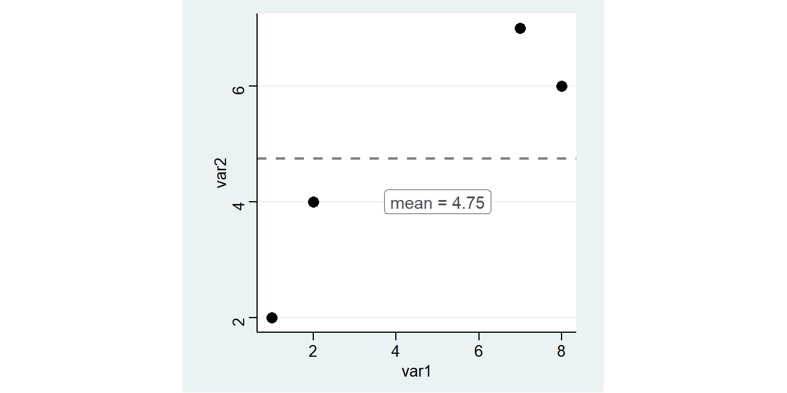
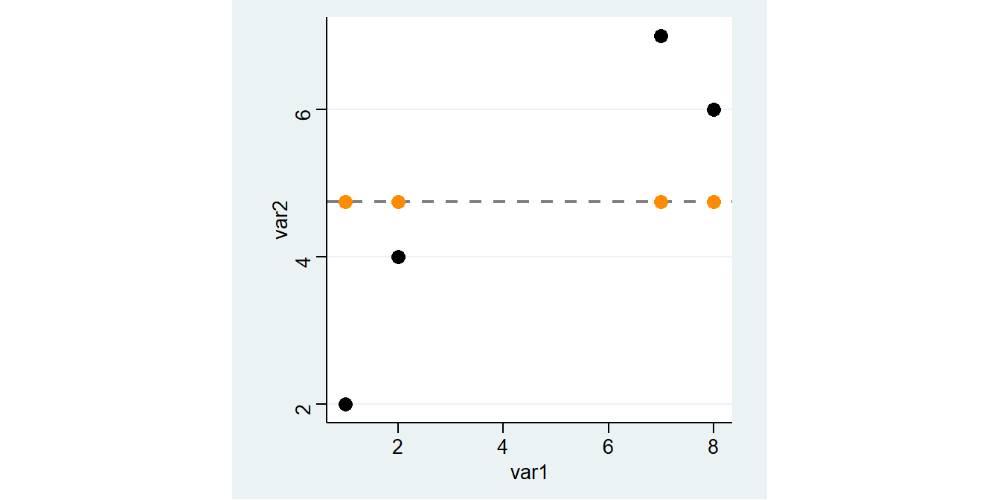

- Herzlich Willkommen!
- 1 Einstieg in Stata
- 2 Arbeiten mit Datensätzen in Stata
- 2.1 Vorab: Befehlsstruktur & Hilfe
- 2.2 Auszählen & Überblick erhalten
- 2.3 Neue Variablen erstellen
- 2.4 Bestehende Variablen verändern
- 2.5 gen ist gut, Kontrolle ist besser
- 2.6 Fehlende Werte
- 2.7 if Bedingungen und fehlende Werte
- 2.8 keep & drop
- 2.9 Labels und if-Bedingungen
- 2.10 Nochmal von vorne: Daten neu laden
- 2.11 Speichern
- 2.12 Übungen
- 2.13 Profi-Übungen
- 3 Deskriptive Statistik
- 4 Datenvisualisierung in Stata
- 4.1 Visualisierung einer Variable
- 4.2 Verteilungen vergleichen mit Facetten
- 4.3 Gemeinsame Verteilung zweier Variablen
- 4.4 Weitere
twowayGrafiken - 4.5 Kombinieren von zwei twoway-Grafiken
- 4.6 Optionen
- 4.7 Beispiele zum selbst anpassen
- 4.8 Gruppierte Darstellungen
- 4.9 Bevölkerungspyramide
- 4.10 Anhang
- 5 Zusammenhangsmaße
- 6 Zusammenhänge 2
- 7 Inferenzstatistik I
- 8 Inferenzstatistik II
- 9 Hypothesentests
- 10 Ergebnisexport & weitere Tipps
- 11 Fortgeschrittene Themen
5.7 Anhang
5.7.1 Idee einer Regression
Zum Einstieg betrachten wir zunächst einen (fiktiven) Datensatz mit lediglich 4 Fällen und lediglich zwei Variablen: var1 und var2:
## var1 var2
## 1 1 2
## 2 2 4
## 3 7 7
## 4 8 6
Ziel der Regression ist es, den Zusammenhang zwischen diesen beiden Variablen zu bestimmen. Gibt es einen Trend, in dem Sinn, dass ein höherer Wert von var1 mit einem höheren oder niedrigeren Wert von var2 einhergeht?
Etwas anders gesagt könnte man auch fragen, welchen Wert für var2 wir vorhersagen würden, wenn wir var1 kennen. Ein Ausgangspunkt ist das arithmetische Mittel. Dieses können wir mit mean zB für var2 berechnen.15 Diesen Wert fügen wir als neue Spalte mean_var2 in den Datensatz ein:
## var1 var2 mean_var2
## 1 1 2 4.75
## 2 2 4 4.75
## 3 7 7 4.75
## 4 8 6 4.75
Müssten wir eine Prognose für die Werte von var2 abgeben, wäre das arith. Mittel eine gute Wahl. Die vorhergesagten Werte werden jeweils auf der Linie für das arith. Mittel liegen.

5.7.2 Residuen
Allerdings liegen wir mit dem arith. Mittel dann immer auch Stück daneben. Diese Abweichung zwischen dem tatsächlichen und dem vorhergesagten Wert wird als Residuum bezeichnet, in unserem Beispiel ist das jeweils die Differenz zwischen var2 und mean:
\[Residuum = beobachteter\, Wert \; - \; vorhergesagter\,Wert\]
Als Formel wird das in der Regel wie folgt dargestellt:
\[\epsilon_{\text{i}} = \text{y}_{i} - \hat{\text{y}}_{i}\]
Wir können also die Residuen als Differenz zwischen var2 und mean berechnen und in df ablegen:
## var1 var2 mean_var2 m_abw
## 1 1 2 4.75 -2.75
## 2 2 4 4.75 -0.75
## 3 7 7 4.75 2.25
## 4 8 6 4.75 1.25
Was bedeutet also ein negativer oder ein positiver Wert für das Residuum?
Die horizontale Linie für das arithm. Mittel ist aber sehr deutlich nicht die beste Methode, um die Werte für var2 vorherzusagen. In der Graphik können wir deutlich sehen, dass die Werte “weiter links”, also mit geringeren Werten für var1, auch geringere Werte für var2 aufweisen. Wir könnten also unseren Vorhersagefehler bzw. das Residuum minimieren indem wir die Linie drehen. Die Idee der Regressionsanalyse ist es dabei, die Residuuen zu minimieren. Was würde aber passieren wenn wir die Residuen aus der Mittelwertsvorhersage aufsummieren, um Sie dann zu minimieren?
5.7.3 Quadrierte Residuen
Mit tabstat ..., s(sum) können wir die Summe für eine Variable bilden:
## var1 var2 mean_var2 m_abw
## 1 1 2 4.75 -2.75
## 2 2 4 4.75 -0.75
## 3 7 7 4.75 2.25
## 4 8 6 4.75 1.25## . use "regression_bsp.dta", clear
##
## . egen mean_var2 = mean(var2)
##
## . gen m_abw = var2 - mean_var2
##
## . tabstat m_abw, s(sum)
##
## variable | sum
## -------------+----------
## m_abw | 0
## ------------------------Die Summe der Resiuden auf Basis des arith. Mittels ist immer Null!
Anders formuliert: die gestrichelten Linien nach oben sind in Summe genauso lang wie gestrichelten Linien nach unten.
Die Lösung ist die Residuen zu quadrieren. So ergibt sich eine Kennzahl, die wir minimieren können:
## . use "regression_bsp.dta", clear
##
## . egen mean_var2 = mean(var2)
##
## . gen m_abw = var2 - mean_var2
##
## . qui reg var2 var1
##
## . predict pred_vorher, xb
##
## . gen res = var2 - pred_vorher
##
## . gen res2 = res^2
##
## . set linesize 90
##
## . reg var2 var1
##
## Source | SS df MS Number of obs = 4
## -------------+------------------------------ F( 1, 2) = 11.07
## Model | 12.4932432 1 12.4932432 Prob > F = 0.0797
## Residual | 2.25675676 2 1.12837838 R-squared = 0.8470
## -------------+------------------------------ Adj R-squared = 0.7705
## Total | 14.75 3 4.91666667 Root MSE = 1.0623
##
## ------------------------------------------------------------------------------
## var2 | Coef. Std. Err. t P>|t| [95% Conf. Interval]
## -------------+----------------------------------------------------------------
## var1 | .5810811 .1746331 3.33 0.080 -.1703044 1.332467
## _cons | 2.135135 .9485004 2.25 0.153 -1.945933 6.216203
## ------------------------------------------------------------------------------
##
## . gen m_abw2 = m_abw^2
##
## . tabstat m_abw2, s(sum)
##
## variable | sum
## -------------+----------
## m_abw2 | 14.75
## ------------------------## var1 var2 mean_var2 m_abw m_abw2
## 1 1 2 4.75 -2.75 7.5625
## 2 2 4 4.75 -0.75 0.5625
## 3 7 7 4.75 2.25 5.0625
## 4 8 6 4.75 1.25 1.56255.7.4 Interpretation der Regression
Die Minimierung erledigt reg für uns. Hier geben wir zuerst das Merkmal an, das auf der y-Achse liegt (die abhängige Variable) und dann das Merkmal für die x-Achse (unabhängige Variable) an. Ein positiver Wert unter Coef. in der Zeile von var1 bedeutet, dass unsere Gerade von links nach rechts ansteigt und ein negativer eine fallende Linie bedeuten würde. Der Wert unter var1 gibt an, um wieviel sich die Gerade pro “Schritt nach rechts” nach oben/unten verändert. Die Gerade steigt also pro Einheit von var1 um 0.5810811:
## . use "regression_bsp.dta", clear
##
## . qui egen mean_var2 = mean(var2)
##
## . qui gen m_abw = var2 - mean_var2
##
## . qui reg var2 var1
##
## . qui predict pred_vorher, xb
##
## . qui gen res = var2 - pred_vorher
##
## . qui gen res2 = res^2
##
## . qui set linesize 90
##
## . reg var2 var1
##
## Source | SS df MS Number of obs = 4
## -------------+------------------------------ F( 1, 2) = 11.07
## Model | 12.4932432 1 12.4932432 Prob > F = 0.0797
## Residual | 2.25675676 2 1.12837838 R-squared = 0.8470
## -------------+------------------------------ Adj R-squared = 0.7705
## Total | 14.75 3 4.91666667 Root MSE = 1.0623
##
## ------------------------------------------------------------------------------
## var2 | Coef. Std. Err. t P>|t| [95% Conf. Interval]
## -------------+----------------------------------------------------------------
## var1 | .5810811 .1746331 3.33 0.080 -.1703044 1.332467
## _cons | 2.135135 .9485004 2.25 0.153 -1.945933 6.216203
## ------------------------------------------------------------------------------In unserer Grafik sieht diese Gerade so aus:

5.7.5 Vorhergesagte Werte
Wie hoch ist nun der vorhergesagte Wert auf Basis der blauen Gerade?
Die vohergesagten Werte aus reg var2 var1 entsprechen einfach der Summe aus dem Wert neben _cons und dem Koeffizienten neben var1 multipliziert mit dem jeweiligen Wert für var1.16
## . use "regression_bsp.dta", clear
##
## . qui egen mean_var2 = mean(var2)
##
## . qui gen m_abw = var2 - mean_var2
##
## . qui reg var2 var1
##
## . qui predict pred_vorher, xb
##
## . qui gen res = var2 - pred_vorher
##
## . qui gen res2 = res^2
##
## . qui set linesize 90
##
## . reg var2 var1, noheader
## ------------------------------------------------------------------------------
## var2 | Coef. Std. Err. t P>|t| [95% Conf. Interval]
## -------------+----------------------------------------------------------------
## var1 | .5810811 .1746331 3.33 0.080 -.1703044 1.332467
## _cons | 2.135135 .9485004 2.25 0.153 -1.945933 6.216203
## ------------------------------------------------------------------------------Vorhergesagte Werte werden mit \(\widehat{var2}\) bezeichnet - der ^ steht dabei für “vorhergesagt”:
\[\widehat{var2}=\texttt{Intercept} + 0.5811 \times \texttt{var1}\]
Für die erste Zeile ergibt sich also folgender vorhergesagter Wert: 2.1351+0.5811*1= 2.7162
Also könnten wir mit gen die vorhergesagten Werte “manuell” berechnen:
Die vorhergesagten Werte können wir auch mit predict berechnen und in einer neuen Variable pred_vorher ablegen:
## var1 var2 mean_var2 m_abw m_abw2 manual_vorhers pred_vorher
## 1 1 2 4.75 -2.75 7.5625 2.7162 2.716216
## 2 2 4 4.75 -0.75 0.5625 3.2973 3.297297
## 3 7 7 4.75 2.25 5.0625 6.2028 6.202703
## 4 8 6 4.75 1.25 1.5625 6.7839 6.783784Die Grafik zeigt wie Vorhersagen auf Basis des Regressionsmodells aussehen: Sie entsprechen den Werten auf der blauen Geraden (der sog. Regressionsgeraden) an den jeweiligen Stellen für var1.
 Wir können erkennen, dass die hellblauen Punkte (also die Vorhersagen des Regressionsmodells) deutlich näher an den tatsächlichen Punkten liegen als die orangen Vorhersagen auf Basis des
Wir können erkennen, dass die hellblauen Punkte (also die Vorhersagen des Regressionsmodells) deutlich näher an den tatsächlichen Punkten liegen als die orangen Vorhersagen auf Basis des mean.
5.7.6 Residuen Teil 2
Trotzdem sind auch die hellblauen Punkte nicht deckungsgleich mit den tatsächlichen Werten. Es gibt also auch hier wieder Residuen, also Abweichungen des beobachteten vom vorhergesagten Wert. Wir können diese per Hand berechnen als Differenz zwischen dem tatsächlichen und dem vorhergesagten Wert:
Oder wir können Sie mit predict neue_variable , residuals erstellen:
## var1 var2 mean_var2 m_abw m_abw2 manual_vorhers pred_vorher res p_res
## 1 1 2 4.75 -2.75 7.5625 2.7162 2.716216 -0.7162162 -0.7162162
## 2 2 4 4.75 -0.75 0.5625 3.2973 3.297297 0.7027027 0.7027027
## 3 7 7 4.75 2.25 5.0625 6.2028 6.202703 0.7972973 0.7972973
## 4 8 6 4.75 1.25 1.5625 6.7839 6.783784 -0.7837838 -0.7837838Hier sind die Residuen für p_res als hellblaue Linien eingezeichnet:
 \(\rightarrow\) Wie groß ist die (einfache) Summe der Residuen für
\(\rightarrow\) Wie groß ist die (einfache) Summe der Residuen für pred_vorher?17
Um zu beurteilen, um wieviel besser unsere Gerade aus reg die Werte vorhersagen kann als der mean können wir die Summe der quadrierten Residuen vergleichen. Dazu quadrieren wir also die Residuen:
## var1 var2 mean_var2 m_abw m_abw2 manual_vorhers pred_vorher res res2
## 1 1 2 4.75 -2.75 7.5625 2.7162 2.716216 -0.7162162 0.5129657
## 2 2 4 4.75 -0.75 0.5625 3.2973 3.297297 0.7027027 0.4937911
## 3 7 7 4.75 2.25 5.0625 6.2028 6.202703 0.7972973 0.6356830
## 4 8 6 4.75 1.25 1.5625 6.7839 6.783784 -0.7837838 0.6143170Dann können wir die Summen der quadierten Abweichungen aus der Mittelwertregel und dem Regressionsmodell vergleichen:
dis 7.5625+0.5625+5.0625+1.5625 // abw2 aus Mittelwertsregel
## . dis 7.5625+0.5625+5.0625+1.5625 // abw2 aus Mittel
## > wertsregel
## 14.75dis 0.5129657+0.4937911+0.6356830+0.6143170 // res2 aus regressionsmodell
## . dis 0.5129657+0.4937911+0.6356830+0.6143170 // res
## > 2 aus regressionsmodell
## 2.2567568Zum Beispiel können wir uns fragen, um wieviel sich die Summe der quadrierten Residuen verringert wenn wir statt des mean unser reg-Modell verwenden:
Wenn wir diese Veränderung ins Verhältnis mit dem “Ausgangswert”, also den Residuen aus der Mittelwertregel setzen, dann erhalten wir das \(R^{2}\) für unser reg-Modell. Dieses gibt die prozentuale Verringerung der Residuen durch das reg-Modell im Vergleich zur Mittelwertregel an:
Unser Regressionsmodell kann also 84,7% der Streuung um den Mittelwert erklären. Dieser Wert wird auch als \(R^2\) bezeichnet. Im Regressionsoutput können wir das \(R^2\) oben rechts unter R-squared ablesen.
Außerdem sehen wir oben links in der Spalte SS die “Sum of Squares”. Hier finden wir auch die Werte von oben wieder: unter Total ist die Summe der quadrierten Abweichungen der beobachteten Werte vom arith. Mittel angegeben (14.75, sozusagen die Summe der m_abw2 von oben). Residual gibt die Summe der Abweichungsquadrate zwischen den beobachteten Werten und den vorhergesagten Werten der Regression (2.256.., Die Summe von res2).
5.7.7 Indifferenztabelle
\(\chi^2\) ergibt sich wie gesagt aus der Differenz zwischen der Indifferenztabelle und den beobachteten Häufigkeiten. Die Indifferenztabelle können wir mit ,expected aufrufen (mit nofreq blenden wir die tatsächlichen Häufigkeiten aus):
## . set linesize 90
##
## . qui cd "D:\Studium\01_Oldenburg\Lehre\Datensaetze"
##
## . qui use "Allbus_1980-2018.dta",clear
##
## . qui keep if year == 2014 & dh01 > 0 & dh04 > 0 & aq03 > 0
##
## . qui mvdecode aq03 dh01 dh04, mv(-32 -9)
##
## . tab aq03 dh01, expected nofreq
##
## HUND ODER KATZE | MEHRPERSONENHAUSHALT?
## IM HAUSHALT? | MEHRPERSO EINPERSON | Total
## -----------------+----------------------+----------
## HUND | 312.3 78.7 | 391.0
## KATZE | 452.8 114.2 | 567.0
## BEIDES | 99.8 25.2 | 125.0
## KEINS VON BEIDEN | 1,887.1 475.9 | 2,363.0
## -----------------+----------------------+----------
## Total | 2,752.0 694.0 | 3,446.0Ausgangspunkt für diese Indifferenztabelle sind die relativen Häufigkeiten der tatsächlich beoachteten Werte:
## . set linesize 90
##
## . qui cd "D:\Studium\01_Oldenburg\Lehre\Datensaetze"
##
## . qui use "Allbus_1980-2018.dta",clear
##
## . qui keep if year == 2014 & dh01 > 0 & dh04 > 0 & aq03 > 0
##
## . qui mvdecode aq03 dh01 dh04, mv(-32 -9)
##
## . tab aq03 dh01,cell nofreq
##
## HUND ODER KATZE | MEHRPERSONENHAUSHALT?
## IM HAUSHALT? | MEHRPERSO EINPERSON | Total
## -----------------+----------------------+----------
## HUND | 10.16 1.19 | 11.35
## KATZE | 14.57 1.89 | 16.45
## BEIDES | 3.37 0.26 | 3.63
## KEINS VON BEIDEN | 51.77 16.80 | 68.57
## -----------------+----------------------+----------
## Total | 79.86 20.14 | 100.000.26 % der Befragten wohnen alleine (dh01 = 2) und haben einen Hund und eine Katze (aq03=3).
Uns interessieren hier nur die Randverteilungen aus Sum: 3.63 % der Befragten haben einen Hund und eine Katze (aq03=3). 20.14 % der Befragten wohnen alleine (dh01 = 2).
| MEHRPERSO | EINPERSON | Total | |
|---|---|---|---|
| HUND | A | E | 0.1135 |
| KATZE | B | F | 0.1645 |
| BEIDES | C | G | 0.0363 |
| KEINES VON BEIDEM | D | H | 0.6857 |
| Total | 0.7986 | 0.2014 | 1 |
Wären beide Merkmale unabhängig voneinander, würden wir erwarten, dass die Wahrscheinlichkeit für das Auftreten einer Merkmalskombination dem Produkt der Einzelwahrscheinlichkeiten entspricht (das ist die “Indifferenz”): \(P(A\cup B) = P(A) \times P(B)\). Bspw. ergibt sich der erwartete Wert für die Zellen dann aus der relativen Randverteilung multipliziert mit der Gesamtfallzahl:
für Zelle
B:0.1645\(\times\)0.7986\(\times\) 3446 = 452.8102.für Zelle
C:0.0363\(\times\)0.7986\(\times\) 3446 = 99.8259.für Zelle
H:0.6857\(\times\)0.2014\(\times\) 3446 = 475.8915.
Dies sind auch die Werte, die Stata uns oben mit tab aq03 dh01, expected nofreq ausgegeben hatte.
\(\chi^2\) ist dann die summierte Differenz zwischen dieser Indifferenztabelle (also der erwarteten Verteilung bei Unabhängigkeit beider Merkmale) und den beobachteten Häufigkeiten: je größer die Differenz, desto unwahrscheinlicher ist es, dass beide Merkmale unabhängig sind.